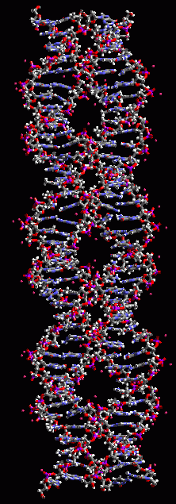
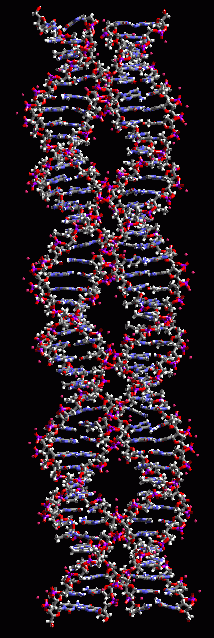
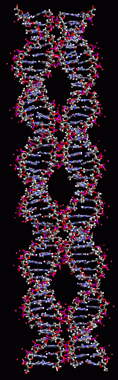
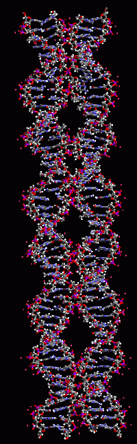

DNA nanomechanical devices could be useful for performing fast calculations,
for sensors that detect specific molecules, to improve the properties or
response performance of materials at the nanoscale aand as stimuli at the
same scale. In recent years Seeman laboratory in NYU has demonstrated that
the level of control offered by DNA systems can be exploited to make intricate
DNA based nanostructures, including the self-assembly of DNA to form 2D
and 3D periodic arrays. In particular he has demonstrated elements required
for constructing nanomotors. We are developing methods, algorithms, and
software tools useful for optimizing DNA nanostructures. These methods
can be used to test and optimize DNA devices before they are synthesized
and assembled and interpreting the results of the tests on the final DNA
nanostructures.
   
PX65
PX75
PX85
PX95